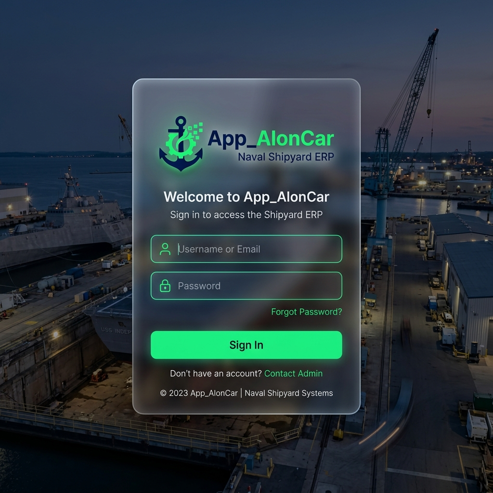
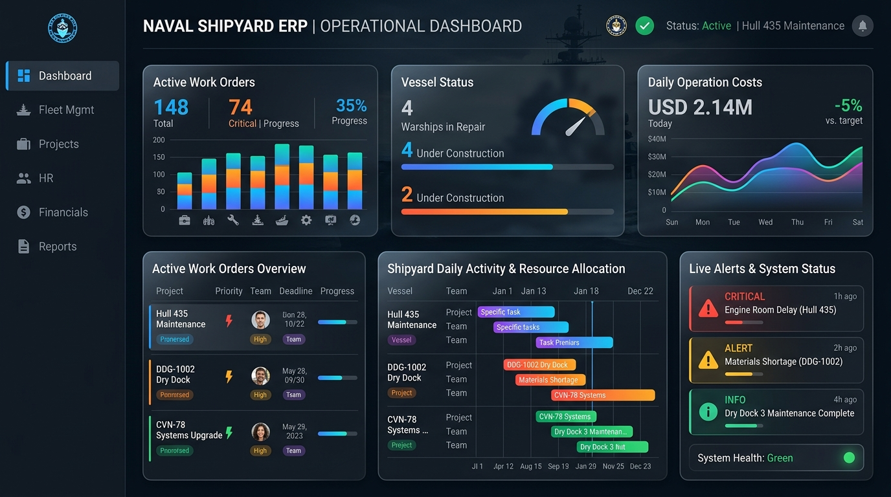
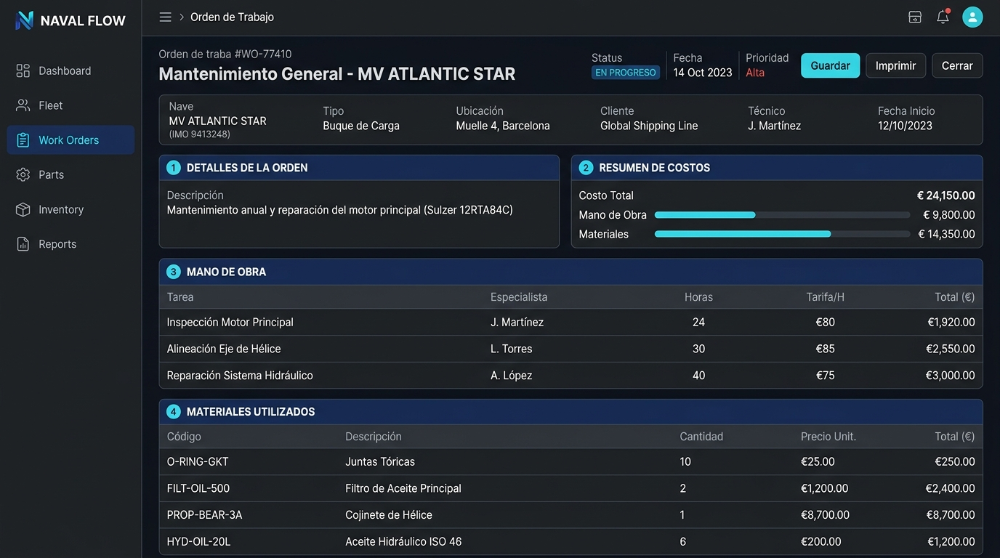

App_AlonCar
Sistema de Gestión de Costos Naval
Propuesta de solución integral para el Astillero
Agenda de la Reunión
TRAMO 1 (Visión General)
Qué pidieron, cómo estamos hoy y la solución propuesta.
☕ PAUSA / CAFÉ
TRAMO 2 (Profundidad Técnica)
Análisis módulo por módulo y el rol de la Inteligencia Artificial.
El Pedido Original
Ustedes plantearon necesidades claras:
- Un sistema de costos más ágil, adaptable y seguro.
- Un mapeo del flujo de información y manual de procedimientos.
- Mejor orden y trazabilidad de los datos (saber quién hace qué).
"Todo lo que van a ver hoy fue diseñado para responder exactamente a esto."
El Sistema Actual
12 Planillas Interconectadas
Cubren: horas, materiales, terceros, stock, compras, presupuestos y resumen gerencial.
Fueron creadas internamente y funcionaron para llegar hasta acá, pero su arquitectura ya llegó a su límite técnico.
Horas (GS-001) ➔ Operaciones (GS-003) ➔ BD Central (GS-008)
Compras (GS-006) ➔ Stock (GS-007) ➔ Materiales (GS-002)
BD Central ➔ Terceros (GS-005) ➔ Resumen (GS-004)
Red compleja y frágil ante errores humanos.
La Información
El problema no es qué datos tenemos, sino cómo fluyen.
| Dato que recolectamos hoy | Para qué lo usamos |
|---|---|
| Horas de operarios (reloj + imputación) | Calcular el costo de mano de obra por OT. |
| Materiales (consumos pañol + directo a obra) | Calcular el costo de insumos por OT. |
| Servicios de Terceros (talleres, contratistas) | Calcular servicios externos por OT. |
| Datos de Barcos y Clientes | Organizar el historial y facturar correctamente. |
Los Problemas Reales
- Dependencia de una persona: Si el que sabe cómo funciona la planilla no está, el sistema se frena.
- Sin conciliación automática: Las discrepancias (ej. reloj vs imputación) se descubren tarde.
- Información dispersa: Saber el costo real de una OT implica cruzar 3-4 planillas a mano.
- Sin trazabilidad: No sabemos quién cargó qué, ni cuándo se modificó un dato histórico.
- Capacitación difícil: El personal nuevo no tiene un sistema que lo guíe.
La Solución
Una plataforma unificada, automatizada y con asistente IA.
📊 Orden
Toda la info en una sola base.
⚡ Automatización
Controles que hoy se hacen a mano.
🎓 Capacitación
El sistema guía mientras se usa.
🤖 Inteligencia
Hablás con el sistema y te responde.
Arquitectura Modular
Visión: El Día a Día
Acceso seguro para cada rol.

Visión: El Día a Día
Un panel centralizado para tener el control total.

Visión: El Día a Día
El "Triángulo del Costo" en cada Orden de Trabajo.

Diseño a Futuro
- Modular y Escalable: Si mañana queremos agregar liquidación de sueldos, se suma un módulo sin romper lo anterior.
- Altamente Auditable: Cada acción, click y modificación queda registrada de por vida (Data Locking).
- IA Nativa: No es un agregado superficial. Es una herramienta central para estandarizar el conocimiento del astillero.
No es un parche. Es una plataforma corporativa.
☕ Pausa
A continuación: Profundidad Técnica de cada Módulo.
Barcos y Clientes
Reemplaza a: GS-008 (Base Maestra)
El Problema: Hoy el historial de un barco (visitas, reparaciones, costos) está disperso en múltiples hojas y años.
La Solución: Gestión centralizada del Activo. Entrás al barco y ves todo su historial.
"¿Cuánto nos costó este barco en los últimos 2 años? Hoy lleva horas cruzar los datos. Con el sistema, son 3 clics."
Personal y Talleres
Reemplaza a: GS-008 + GS-005 (Terceros)
El Problema: Los tarifarios se actualizan a mano y se pierde el valor histórico. Faltan vínculos obligatorios entre operario externo y taller.
La Solución: Tarifarios con vigencia temporal. Control estricto de proveedores.
"Cambiar una tarifa crea una tarjeta nueva. El sistema sabe qué cobrar hoy y qué cobrar por el trabajo de hace un mes."
Operaciones (El Motor)
Reemplaza a: GS-001 (Horas), GS-003 (OTs en progreso), GS-009/010 (Conciliación)
El Problema: La conciliación entre lo que marca el reloj y lo que se imputa es manual. Los errores se ven tarde.
La Solución: Automatización total. El "Triángulo del Costo" en tiempo real.
"Si Juan marca 8 horas en reloj pero se imputan 4 a la OT, el sistema alerta al gerente en el mismo día."
Logística (Pañol)
Reemplaza a: GS-002 (Materiales), GS-006 (Compras), GS-007 (Stock)
El Problema: Restar stock es manual. Compras directas a obra se pierden o imputan mal.
La Solución: Inventario vivo. Retiro de material = descuento automático. Alertas de stock mínimo.
Presupuestos y Facturación
Reemplaza a: GS-011 (Presupuestos), GS-012 (Cotizador)
El Problema: El presupuesto y la liquidación final (el Anexo) están desconectados del costo real (vivo).
La Solución: El presupuesto se clona al Anexo final. El sistema separa la mano de obra (exenta) de los materiales (21% IVA) automáticamente.
Cierre y Auditoría
Reemplaza a: GS-004 (Resumen Gerencial parcial)
El Problema: Un dato cerrado se puede modificar accidentalmente, arruinando históricos.
La Solución: Data Locking.
"Cuando la OT se factura, se bloquea. Queda grabada en piedra. Sabemos quién la creó, quién imputó, y quién la cerró."
Manual de Procedimientos Vivo
El sistema obliga a seguir el orden correcto:
- Se crea la OT (M3) asociada al Barco (M1).
- Se asignan Operarios (M2) y marcan Reloj.
- Se imputan horas (M3). Conciliación automática.
- Pañol entrega materiales (M4). Baja el stock.
- El costo total (MO + Mat) sube en vivo.
- Gerencia emite Anexo facturable (M5).
- Se cierra y bloquea la OT (M6).
Niveles de Autorización
| Rol | Puede Hacer | No Puede Hacer |
|---|---|---|
| Operario / Carga | Cargar horas, registrar consumos de pañol. | Ver costos globales, modificar tarifas, cerrar OTs. |
| Supervisor | Aprobar horas, ver alertas de su área. | Cerrar y facturar, modificar presupuestos. |
| Gerencia | Cierre, facturación, reportes BI, auditoría total. | Acceso Total. |
IA: Procedimientos y Conocimiento
Parte 1: El Redactor
Planteás un problema ("Hay que archivar remitos así...") y la IA redacta en segundos un manual de procedimiento corporativo estandarizado. Lo aprobás y lo notifica.
Parte 2: El Asistente Operativo
Un empleado duda: "¿Cómo archivo esto?". Le pregunta al sistema, y la IA busca en los manuales aprobados y le da la respuesta exacta.
"El conocimiento queda en la empresa, no en la cabeza de las personas."
IA: Análisis de Datos (BI)
Le hablás al sistema en lenguaje natural:
- "¿Cuál es el costo del Barco Libertad esta semana?"
- "¿Qué materiales bajaron del stock mínimo?"
Toda la info de las ex-planillas está interrelacionada. La IA te la resume.

¿Qué significa la IA para Gerencia?
- Estandariza: Transforma el caos diario en procedimientos formales, sin que el gerente tenga que perder horas escribiendo.
- Detecta: Encuentra discrepancias financieras (horas sin imputar) antes de que impacten en la facturación.
- Capacita 24/7: Guía al personal sobre qué hacer y cómo hacerlo (carga asistida).
La IA no reemplaza a nadie. Le saca el trabajo administrativo pesado a la gerencia y le da superpoderes.
¿Preguntas?
Análisis del Proyecto
Estado, Costos y Modelo
Estado del Desarrollo
- ✅ Diseño y reglas de negocio: Completado.
- ✅ Mapeo de las 12 planillas: Completado (documentado).
- ✅ Infraestructura y Base de Datos: Funcionando.
- 🔧 Interfaces y Automatizaciones (App): En desarrollo.
- 📋 Puesta en marcha: Pendiente.
Timeline estimado: 3 a 5 meses para la primera versión operativa.
Valor vs. Costo
En el mercado (Septiembre 2026), un desarrollo ERP a medida de este tamaño cuesta entre US$ 20.000 y US$ 35.000.
Solo el trabajo de "Relevamiento de Negocio" (entender cómo funciona el astillero para poder programarlo) le cuesta a un externo meses de trabajo (US$ 5.000+).
Nuestra ventaja: Yo ya tengo el 100% de ese conocimiento (creé las planillas actuales) y utilizo Inteligencia Artificial para multiplicar mi velocidad de desarrollo. El costo real para nosotros es una fracción del valor de mercado.
Propuesta de Modelo
Suscripción (Recomendado)
Sin riesgo inicial.
- Uso completo de los 7 módulos.
- Hosting de servidores.
- Mantenimiento técnico mío.
- El día que no sirva, se cancela.
Venta Directa
Por valor de mercado.
- Se entrega el sistema "llave en mano".
- Las mejoras futuras o nuevos módulos (ej. sueldos) se cotizan aparte.
- Costo de servidores no incluido.